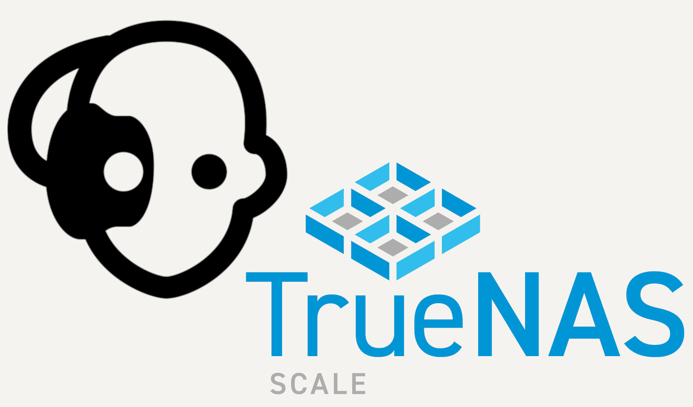
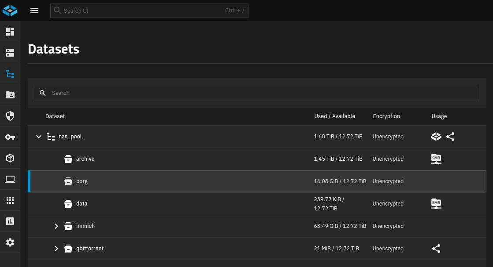
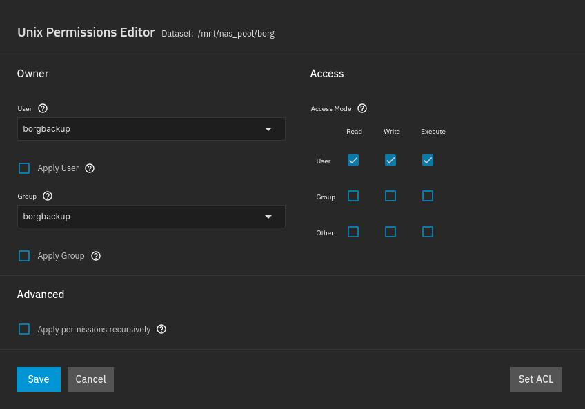
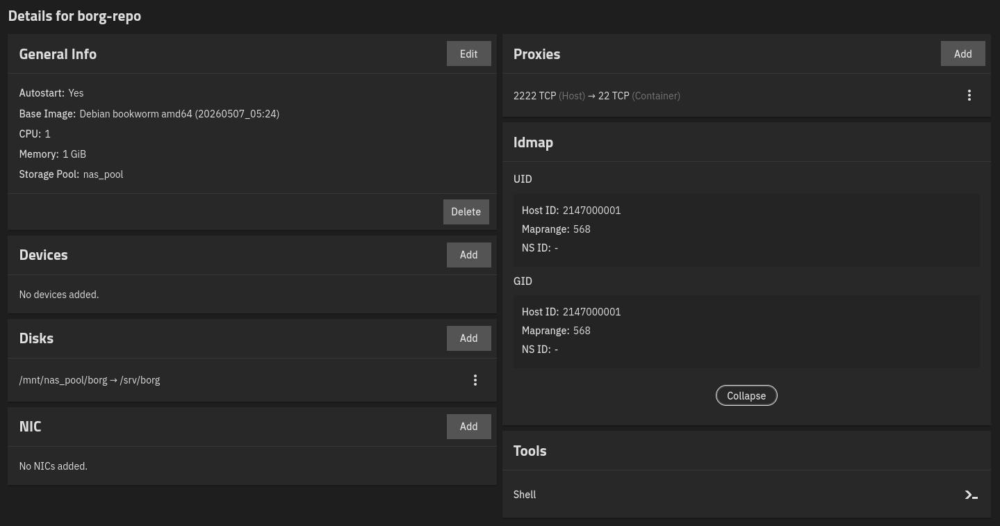
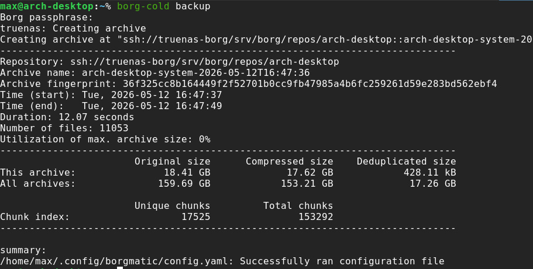
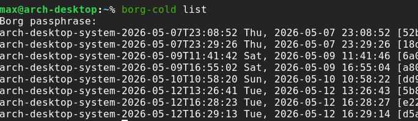

Borgmatic configuration and infrastructure

After completing the NAS build, I wanted to put it to use as a proper target for system backups. I started looking into Borg and Borgmatic, and the approach matched what I had in mind: repository-based backups, snapshot-style recovery points, and flexible path definitions using regular-expression-style patterns. That made Borgmatic a good candidate for the kind of backup infrastructure I wanted to implement.
The first step was defining what TrueNAS needed to provide. There is no official Borgmatic application for this setup, and the closest community option I found was BorgWarehouse, which unfortunately did not work for me. I decided to use a more custom approach instead.


On TrueNAS, I created a Generic dataset specifically for Borg.
At this stage no additional dataset settings were necessary.
I then set up an LXC container to manage the Borg repositories.
The container exposes its SSH port on 2222 and maps its /srv/borg storage to the newly created dataset mounted on the host at /mnt/nas_pool/borg.
It requires very few resources, so I assigned it a single core and 1GB of RAM.

To avoid file ownership and permission issues, I created a dedicated borgbackup user.
This user owns the dataset and has exclusive read, write, and execute permissions.
A matching user with the same name, UID, and GID exists inside the container as well.
This matters because the container writes to /srv/borg, while the actual storage lives on the TrueNAS host.
Matching the UID and GID ensures that writes from the container user are seen by TrueNAS as writes from the correct host-side user.
To set up connectivity, I created a dedicated SSH key on my local machine:
ssh-keygen -t ed25519 -f ~/.ssh/id_ed25519_borgbackup -C "arch-desktop-borgbackup"I then added a host alias to my local SSH config for convenience:
~/.ssh/config
---
Host truenas-borg
HostName 192.168.178.65
Port 2222
User borgbackup
IdentityFile ~/.ssh/id_ed25519_borgbackup
IdentitiesOnly yes
ServerAliveInterval 10
ServerAliveCountMax 30This allows Borg and Borgmatic to refer to the repository using a cleaner path:
ssh://truenas-borg/srv/borg/repos/arch-desktopThe port and identity file are handled by SSH, so they do not need to be hardcoded in the Borgmatic configuration.
I then hardened SSH access inside the container by disabling password authentication and root login in a dedicated server-side config file:
/etc/ssh/sshd_config.d/borgbackup.conf
---
PasswordAuthentication no
KbdInteractiveAuthentication no
PermitRootLogin no
PubkeyAuthentication yes
AllowUsers borgbackup
ClientAliveInterval 10
ClientAliveCountMax 30Finally, I restricted the SSH key in /home/borgbackup/.ssh/authorized_keys so it can only run borg serve against the intended repository:
command="borg serve --append-only --restrict-to-repository /srv/borg/repos/arch-desktop",restrict ssh-ed25519 <public key> arch-desktop-borgbackupAt this point I moved on to the local Borgmatic configuration stored in ~/.config/borgmatic/config.yaml.
source_directories:
- /home/max
one_file_system: true
source_directories_must_exist: true
patterns_from:
- /home/max/.config/borgmatic/patterns/00-root.patterns
- /home/max/.config/borgmatic/patterns/10-personal-data.patterns
- /home/max/.config/borgmatic/patterns/20-dotfiles.patterns
- /home/max/.config/borgmatic/patterns/30-app-config.patterns
- /home/max/.config/borgmatic/patterns/40-game-saves.patterns
- /home/max/.config/borgmatic/patterns/50-projects.patterns
- /home/max/.config/borgmatic/patterns/99-default-exclude.patterns
repositories:
- path: ssh://truenas-borg/srv/borg/repos/arch-desktop
label: truenas
encryption: repokey-blake2
append_only: true
make_parent_directories: true
compression: zstd,10
archive_name_format: '{hostname}-system-{now:%Y-%m-%dT%H:%M:%S}'
ssh_command: ssh -o ServerAliveInterval=10
keep_weekly: 8
keep_monthly: 12
keep_yearly: 3
checks:
- name: repository
frequency: 1 month
- name: archives
frequency: 1 month
- name: extract
frequency: 1 month
check_last: 3
verbosity: 1
color: falseThe configuration starts from /home/max, but one_file_system keeps the backup from crossing filesystem boundaries.
This prevents Borgmatic from accidentally following mounts that do not belong to the local system backup.
The actual include and exclude rules are split into separate pattern files, which keeps the main configuration readable and makes each group easier to maintain.
The repository points to the SSH alias configured earlier, so Borgmatic can use ssh://truenas-borg/srv/borg/repos/arch-desktop without repeating the port, user, or identity file.
The repository uses repokey-blake2 encryption and is configured as append-only from the client side, matching the restricted borg serve command inside the container.
I also enabled zstd,10 compression and a timestamped archive name so each backup is easy to identify.
Retention is intentionally simple: weekly archives are kept for two months, monthly archives for a year, and yearly archives for three years. The configured checks cover the repository, the archives, and extraction, with Borgmatic only checking the last three archives to keep routine verification reasonably fast.
Some pattern files are quite straightforward, such as 10-personal-data.patterns:
# Personal data directories to back up completely.
+ /home/max/Calibre Library
+ /home/max/Documents
+ /home/max/PicturesOthers express more extensive exclusion rules, such as 50-projects.patterns:
# Project work, with generated dependencies and caches excluded.
- /home/max/Projects/**/.venv
- /home/max/Projects/**/venv
- /home/max/Projects/**/node_modules
- /home/max/Projects/**/__pycache__
- /home/max/Projects/**/.pytest_cache
- /home/max/Projects/**/.mypy_cache
- /home/max/Projects/**/.ruff_cache
- /home/max/Projects/**/.cache
- /home/max/Projects/**/build
- /home/max/Projects/**/dist
- /home/max/Projects/**/.tox
- /home/max/Projects/**/.gradle
- /home/max/Projects/**/.idea
+ /home/max/ProjectsThe remaining pattern files are more personal, so I am not including them here.
With the container, SSH access, and local configuration in place, I created the repository from the Arch desktop using Borgmatic:
borgmatic repo-create --append-onlyThe Borg passphrase was provided manually through an environment variable for the current shell session. Since I use zsh, the prompt command was:
read -rs "BORG_PASSPHRASE?New Borg passphrase: "
echo
export BORG_PASSPHRASEI intentionally did not store the Borg passphrase in the Borgmatic configuration file or in an environment file. Since this is cold storage and I run backups manually, entering the passphrase from my password manager is simple and safer.
After creating the repository, I exported the Borg key:
borg key export ssh://truenas-borg/srv/borg/repos/arch-desktop \
~/arch-desktop-borg-key.txtThis exported key is not an SSH key. It is a backup copy of the Borg repository encryption key, and it is useful if the repository key metadata is ever damaged or lost.
After the repository was created, I ran the first backup manually:
borgmatic create --stats --listI then verified the repository:
borgmatic checkI also inspected the archive list directly with Borg:
borg list ssh://truenas-borg/srv/borg/repos/arch-desktopFinally, I tested borg mount to make sure archives could be browsed directly.
On Arch Linux, this requires python-pyfuse3 and fuse3 to be installed.
For convenience, I assembled a small wrapper script at ~/.local/bin/borg-cold.
I am still refining it, but at the moment it exposes the following actions:
borg-cold ssh-test
borg-cold backup
borg-cold check
borg-cold list
borg-cold files ARCHIVE
borg-cold tree ARCHIVE
borg-cold mount ARCHIVE
borg-cold umount
borg-cold key-export

Each action prompts for the Borg passphrase when needed. I might eventually integrate this with a password manager, but for now the manual prompt is acceptable because the backups are intentionally manual and the NAS is not always powered on.
So far the setup has been working without issues. I do plan to revisit it after I have more experience running it regularly.